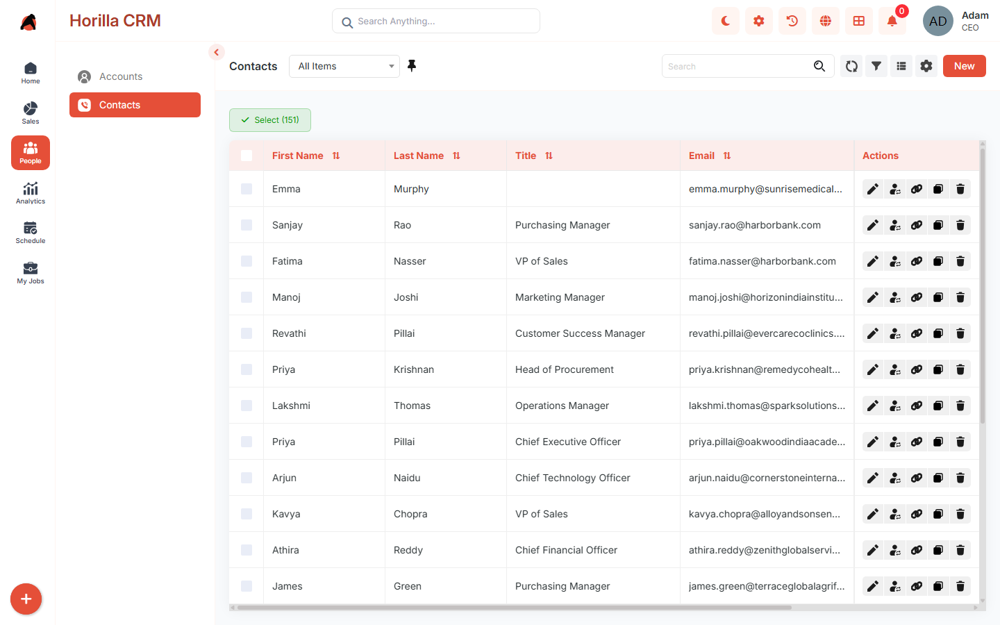
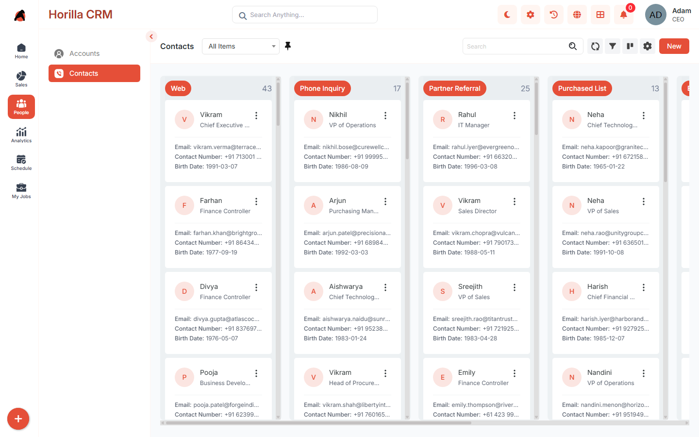
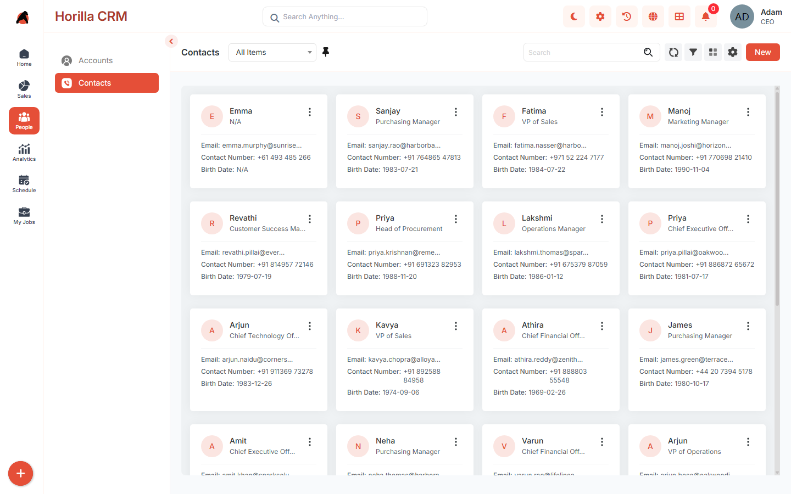
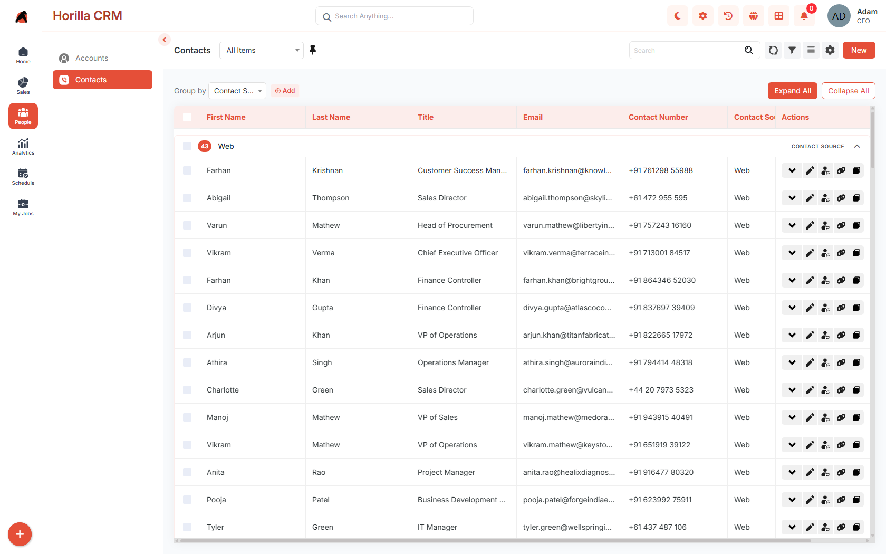
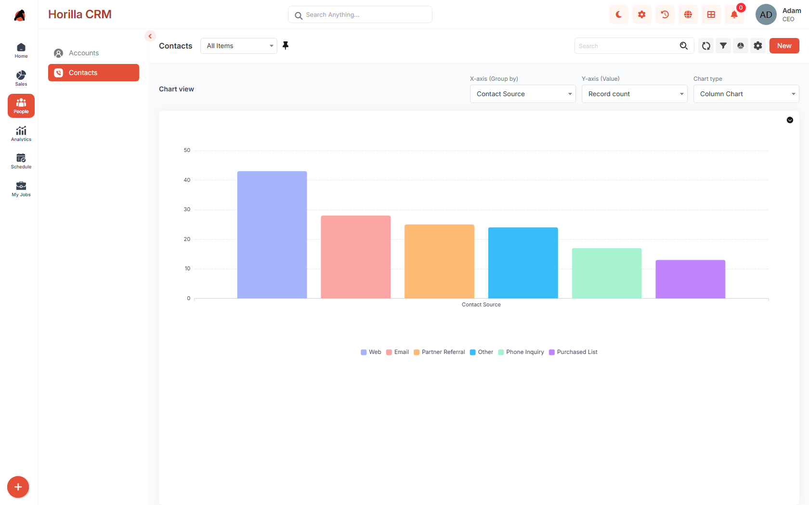
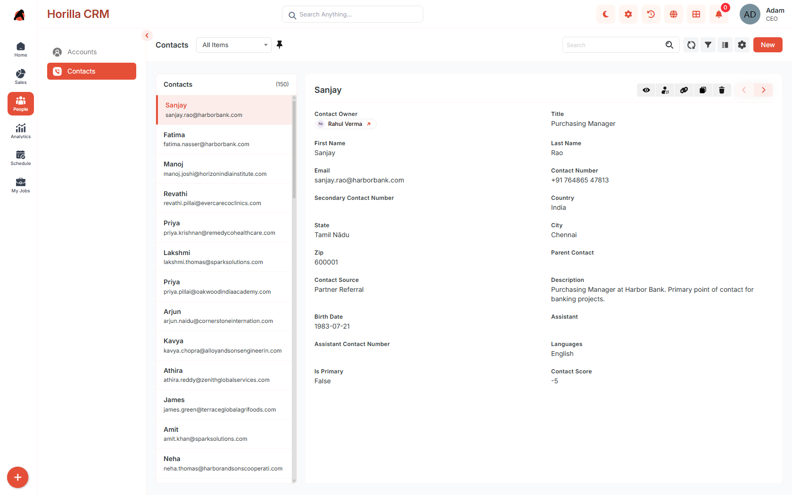
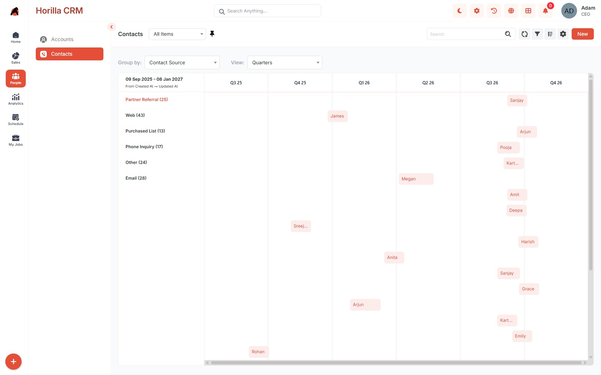
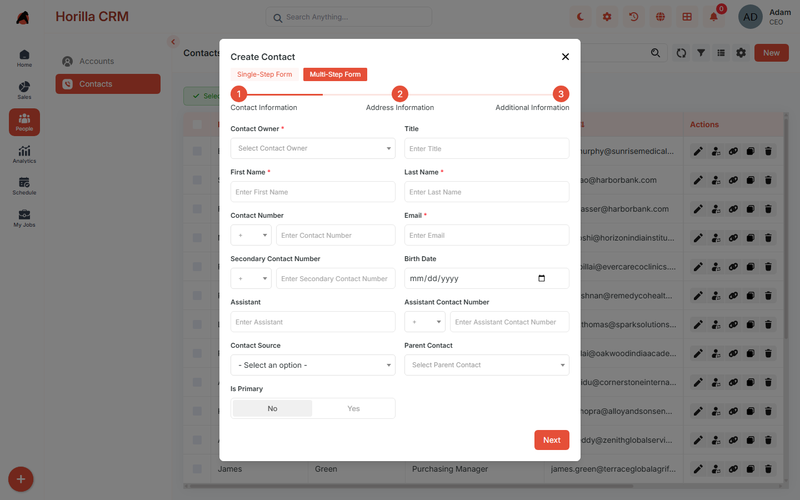
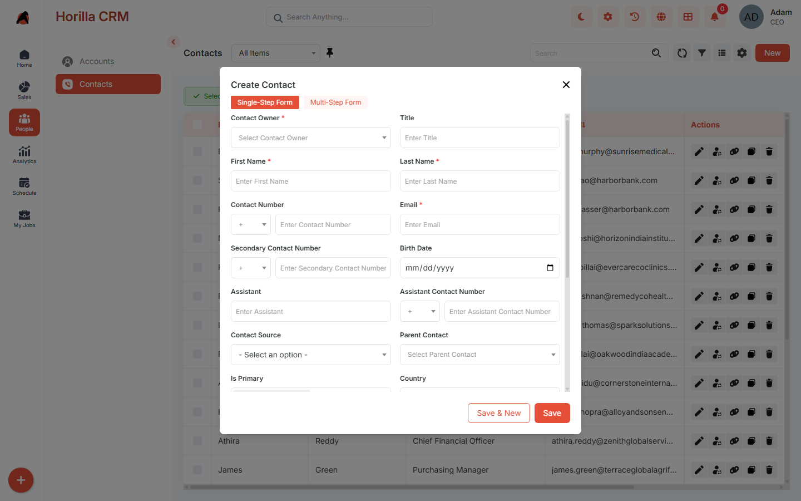
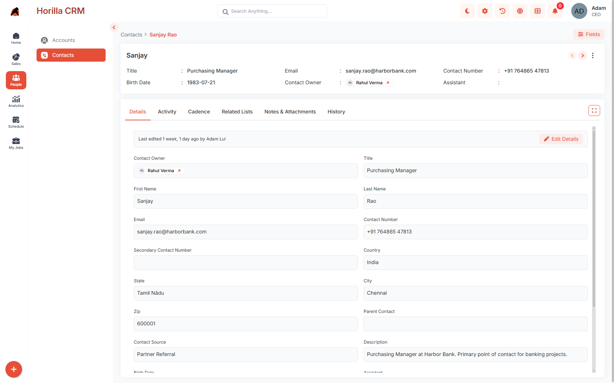

Introduction
The Contacts module is the central repository for individual contact records: customers, prospects and the other people connected to your business. Contacts are integrated with the Leads and Opportunities modules.
Key Features and Functionalities
2.1 Contacts Overview
Purpose: show every contact in one centralised list view.
- Go to People → Contacts.
- Search, sort and filter the list by criteria such as name, job title or email.
- Use the row checkboxes for bulk management: Update, Export and Delete.

2.2 Kanban View
Purpose: visualise contacts and group them by source.

- Switch to this view with the view toggle on the Contacts page.
- Contacts are grouped automatically by Contact Source — for example Web, Referral, Social Media or Event. The categorisation can be adjusted through the Kanban settings.
- Each card shows Name, Job Title, Email and Phone.
- Drag and drop cards to reposition them or to reassign the source.
- The view makes it easier to see which contact sources are the most valuable.
2.3 Card View
Purpose: present contacts in a compact format that is easy to scan.

- Switch to Card View from the toolbar.
- Each card shows Name, Job Title, Email, Phone and Birth Date.
- The same search and filters as List View are supported.
2.4 Group By View
Purpose: organise contacts into groups for analysis.

- Switch to Group By View from the toolbar.
- Group contacts by Contact Source, Job Title or Language.
- Sections are collapsible, which makes comparison easier.
- Helps identify trends and concentrations by source.
2.5 Chart View
Purpose: provide graphical insights and reporting.

- Switch to Chart View from the toolbar.
- Charts cover contact source distribution and contact ownership.
- Useful for analysing where contacts originate and where sourcing gaps lie.
2.6 Split View
Purpose: see the list and the details of a contact at the same time.

- Activate Split View from the toolbar.
- The left panel lists contacts with Name and Email; the right panel shows the contact's details.
- Selecting a contact loads its details without navigating away from the page.
2.7 Timeline View
Purpose: display contacts chronologically for activity tracking.

- Switch to Timeline View from the toolbar.
- Contacts are organised by creation date and last updated date.
- Rows are grouped by Contact Source.
- The columns shown are Name, Last Name, Job Title, Email and Contact Source.
- Helps identify activity trends and periods of high acquisition.
2.8 Creating a New Contact
Purpose: add contacts through structured forms.
Click New on the Contacts page to open the creation wizard. Two modes are available — Multi-Step Form and Single-Step Form — and you can switch between them at any time.
Multi-Step Form
Purpose: guided, structured entry spread across steps.

- Step 1 – Contact Information: Contact Owner, Job Title, First Name / Last Name, Phone Numbers, Email, Assistant Details, Parent Contact, Contact Source, Currency.
- Step 2 – Address Information: City, State, Country, Postal Code (Zip).
- Step 3 – Additional Information: Language, Descriptive Notes.
- Move between the steps with Next and Previous, then click Save to create the record.
Single-Step Form
Purpose: quick entry when all the information is already available.

- All fields appear on one page, with no step navigation, which makes entry faster.
- The fields are the same as those in the three steps above: Contact Information, Address Information and Additional Information.
- Use the toggle in the form header to switch to Single-Step mode.
- Click Save to create the record.
2.9 Contacts Detailed Information
Purpose: give a complete, editable view of a contact.
- Open a contact by clicking its name in the list.
- The view shows personal details — job title, phone, email, birth date and assistant — together with the address.
- Information is organised into the Details, Activity, Related Lists and History tabs.
- Fields can be edited inline using the edit icons.
- Gives visibility into interactions and the relationship history.
